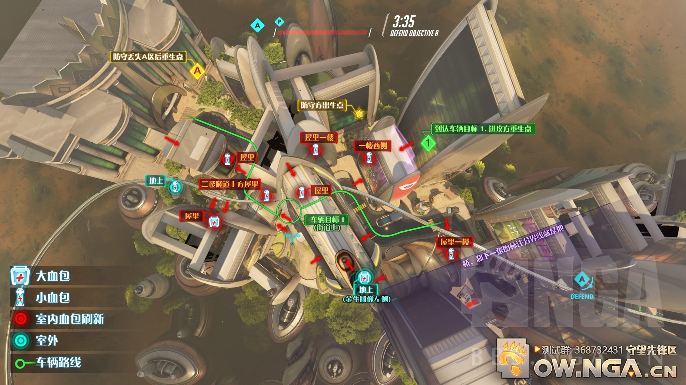
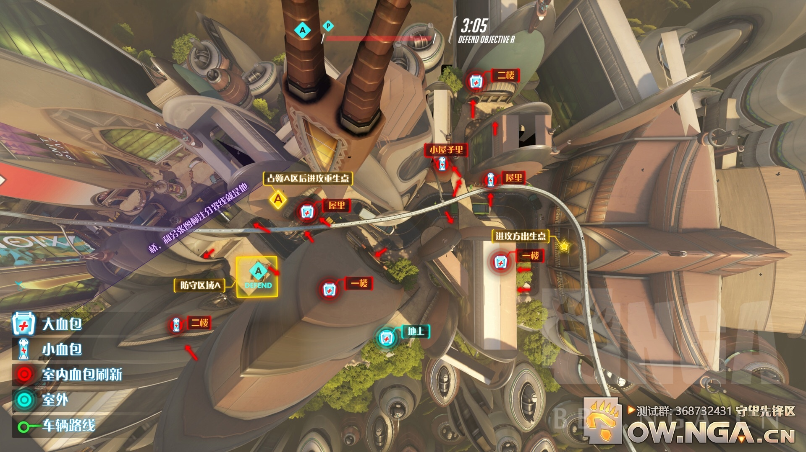
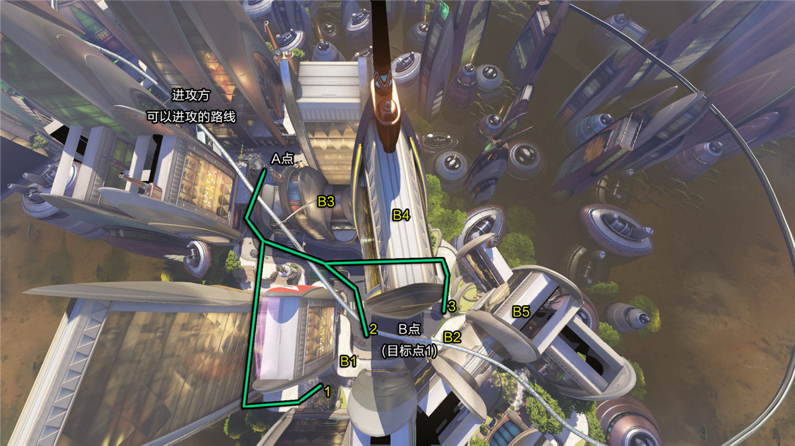

努巴尼是暴雪在2015德国科隆游戏上公布的一张全新地图，传说中的和谐之城，虽然是在非洲大陆，但这也是一座拥有未来科技的城市。 在2015暴雪嘉年华的“守望先锋”世界座谈会中，暴雪的几位游戏设计师也谈及“努巴尼”是唯一一座人与智能机器和谐共处的城市，但它仍处在“铁拳手套”的威胁下——他可以将摩天楼夷为平地!
“努巴尼”这张图是典型的占点、推车图。在A点处占点，之后一路推车至C点(目标点2)处的努巴尼博物馆 进攻方出生在A点外的机场航站楼内，防守方则出生在终点的努巴尼博物馆前的广场上。
进攻方从航站楼出来后，有三条进攻路线可以选择，线路1绕路到左翼进攻A点的左后方。线路2从正面进攻A点。线路3沿着线路1的左翼进攻，区别在于需要穿过A3所在的建筑然后沿着路可以直接走到A5所在的桥上，从而在高处进攻A点。 推荐的防守点：A1、A2、A3所在建筑的室内。 A4点可以从侧面打击进攻方。 A5点可以在高处的桥上埋伏。 小TIPS：防守方找机会在建筑物的内部和进攻方打巷战，高台处任然是好的狙击点，比如二楼或者桥上。
一旦A点被攻占，进攻方便开始推车，首先到达的便是B点(目标点1)。如上图所示，线路2为推车行进的路线。线路3为左翼进攻，直接打击B点后方防守力量。线路1为右翼进攻，从远处支援线路2的队友，适合可以远距离打击的进攻英雄。 推荐的防守点：B3、B4、B5从房间内部攻击外部的敌人。 B1、B2为处在桥上的点，方便打击低处的敌人。
进攻方成功夺取B点之后，便可以继续向C点(终点)推车。 线路1从C4点所在的房屋内部穿过，便于打击C点的左翼。 线路2是推车行进的路线。 线路3通过从右翼绕路到C点的右后方进行攻击。 推荐的防守点：本图的特色就是室内的房间很多，室外的桥也很多还有许许多多二楼的防守位置。